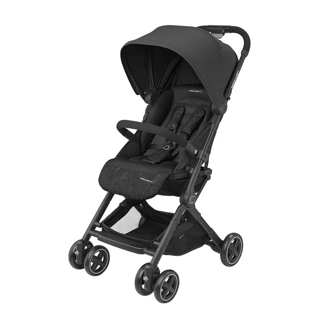
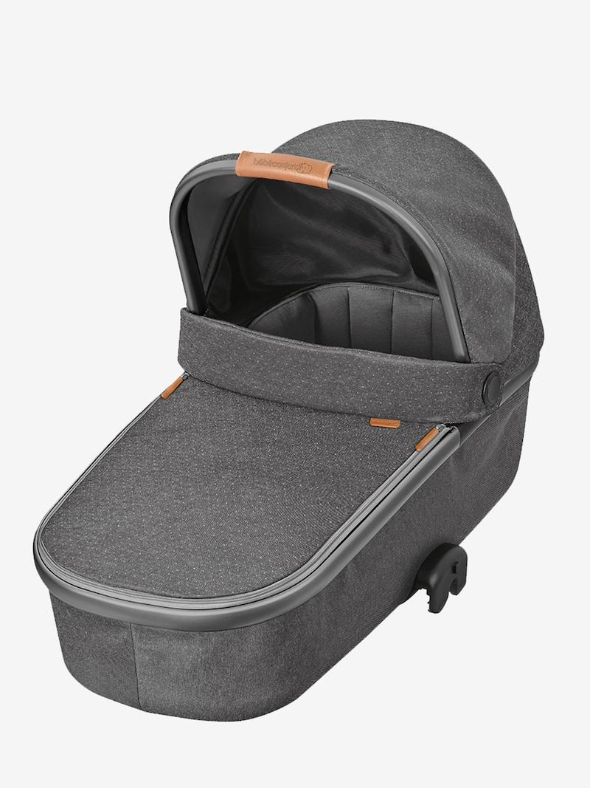
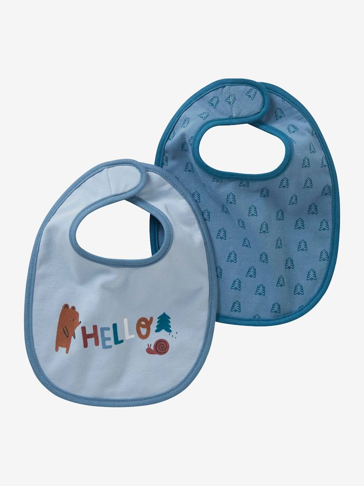
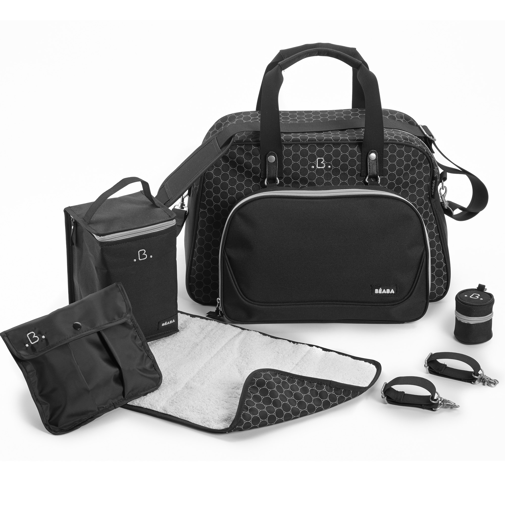

| Poussettes |
 |
Poussette Lara de Bébé Confort, idéale pour les petits espaces et les grandes aventures! De la naissance jusqu'à 3,5 ans
environ 0-15kg. Lara, la poussette ultra-compacte utilisable dès la naissance et jusqu'à 3 ans et demi, idéale pour
les familles citadines et adeptes des voyages. |
produit acheté |
|
| Landaus |
 |
Large, spacieuse et équipée d'un matelas ergonomique, la nacelle Oria de Bébé Confort , 2 en 1 -lit d’appoint et
landau- est équipée du Modulo clip system qui permet de la fixer au châssis de la poussette en un simple clic.Pratique pour ne pas avoir
à réveiller bébé lorsque vous le déplacez de sa sieste pour l’emmener promener au grand air. |
déjà selectionné |
|
| Bavoirs |
 |
Voici un lot de deux petits bavoirs naissance adaptés à la taille des nouveaux-nés. Ils s'attachent autour du cou de bébé
en un tour de main grâce à la fermeture par scratch |
disponible |
|
| Sacs à Langer |
 |
Le sac à langer Genève de Béaba dispose grande contenance, il est idéal pour toutes vos sorties avec bébé:
pour une simple promenade, un week-end ou un voyage avec bébé. Pratique et intemporel avec son design chic, il vous permettra
d'emporter tout le nécessaire pour bébé et d'être bien organisé. |
urgent |
|